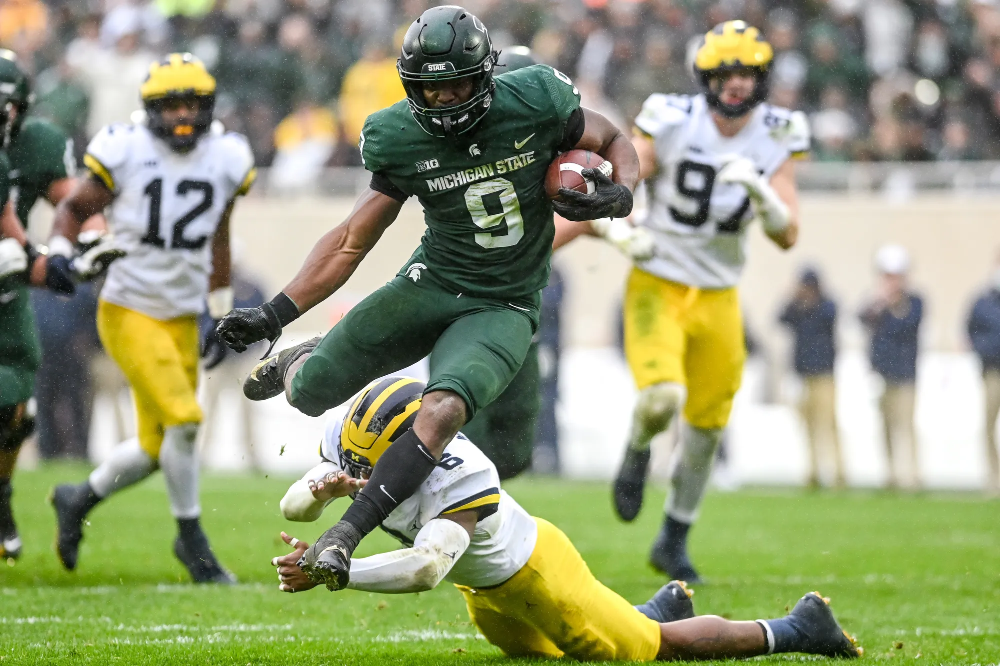
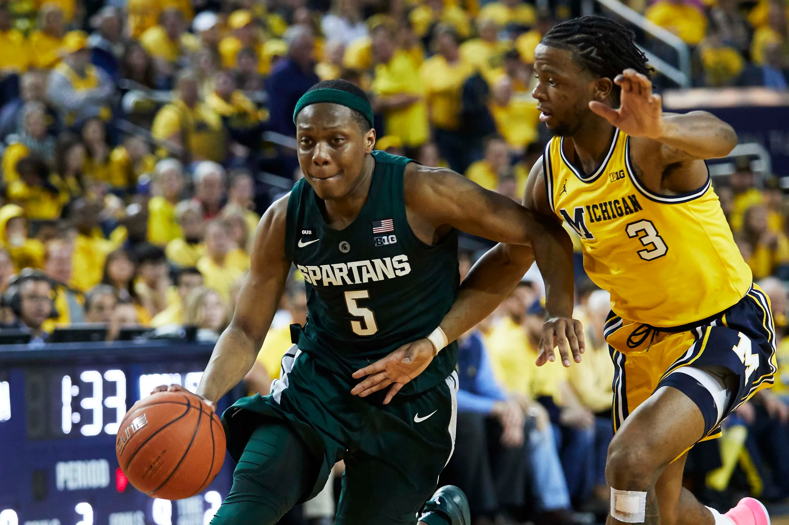

How the tides have turned
The University of Michigan and Michigan State University both have a long history playing one of the most popular sports in America: College football. Michigan has the most wins of any college football program at 997 currently, where Michigan State has 729. The two schools have competed at the highest level consistently for a number of years, and they have put up many spectacular performances against each other. Though Michigan leads the series overall by a wide margin, the story has changed significantly in recent years. Since 2000, Michigan leads the series 13-11. This is a large difference when compared to overall statistics. A more noticeable statistic though, is the record since 2008. Michigan State has a lead in the series since then with a 10-6 record. This is due in large part to the success of the program from 2008-2015 under head coach Mark Dantonio. This is the best record Michigan state has posted over a 16 year period since the 1960s when MSU was competing for national championships almost every year. Though the future does not look very bright for the Spartans, it is worth noting that they have shown a renewed will to fight against their biggest rival and the best football program of all time.
Football results since 2020
| Year | Winner | Location |
|---|---|---|
| 2020 | Michigan State | Ann Arbor, MI |
| 2021 | Michigan State | East Lansing, MI |
| 2022 | Michigan | Ann Arbor, MI |
Arguably the second most popular college sport is college basketball. College basketball has been a sport which both Michigan and Michigan State have excelled at for years. Michigan State has had two of the best head coaches in college basketball history with Jud Heathcote and Tom Izzo, who won the school 2 titles and where Michigan State currently has the longest active NCAA tournament streak at 25 games after Kansas had to vacate the 2018 final four. Michigan, though very successful, only has one national title and does not currently have a tournament streak. Michigan leads the all time series 97-88 between the two schools, but since Michigan State hired Tom Izzo, the tide has begun to turn. Tom Izzo was hired in 1995, and since 2000, Michigan state leads the series with Michigan 29-16. Though Michigan has had very impressive teams since 2000, some of which have been to the national title game with many now NBA players, Michigan State still has taken a commanding lead in the series over the last 23 years with seven final four appearances in that span. Since 2020, the home team is undefeated in the series with Michigan hiring Juwan Howard, a former Michigan player, to be the head coach.


Kenneth Walker vs Michigan, 2021